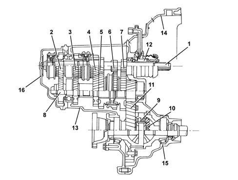
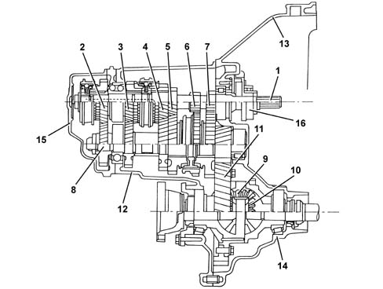

2110A manual gearbox and differential assembly
- Path
- Descriptions > 21 GEARBOX > 2110 MANUAL GEARBOX AND DIFFERENTIAL > 2110A manual gearbox and differential assembly
- Kind
- system description
- Applies to
- engines: 1.6 TS, 2.0 TS; all production periods
- Interactive page
- https://sloeber94.github.io/elrnDB-a147/en/#/3022462
Applies to: engines: 1.6 TS; all production periods
CONSTRUCTION FEATURES
The structure of the gearbox casing consists of: a casing which contains and supports the main and layshafts, rods and gear selector forks and the gear selector and engagement device.

1 - Main shaft 2 - 5th speed drive gear 3 - 4th speed drive gear 4 - 3rd speed drive gear 5 - 2nd speed drive gear 6 - 1st speed drive gear 7 - Reverse speed drive gear 8 - Layshaft 9 - Satellite gears 10 - Planet gears 11 - Ring gear 12 - Clutch coaxial control device 13 - Gear casing 14 - Clutch casing 15 - Differential mount casing 16 - Gear casing cover
Applies to: engines: 2.0 TS; all production periods; only with equipment: Cambio robotizzato
CONSTRUCTION FEATURES
The structure of the gearbox consists of: a gearbox casing which contains and supports the main and layshafts, rods and gear selector forks and the gear selector and engagement device.

1 - Main shaft 2 - 5th speed drive gear 3 - 4th speed drive gear 4 - 3rd speed drive gear 5 - 2nd speed drive gear 6 - 1st speed drive gear 7 - Reverse speed drive gear 8 - Layshaft 9 - Satellite gears 10 - Planet gears 11 - Ring gear 12 - Gearbox casing 13 - Clutch casing 14 - Differential support housing 15 - Gear casing cover 16 - Thrust bearing